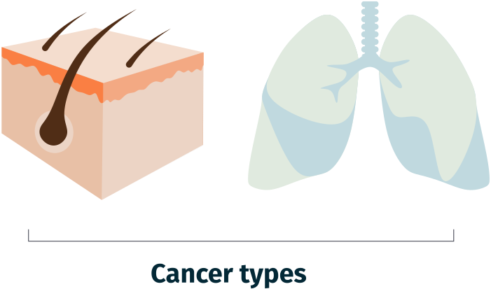
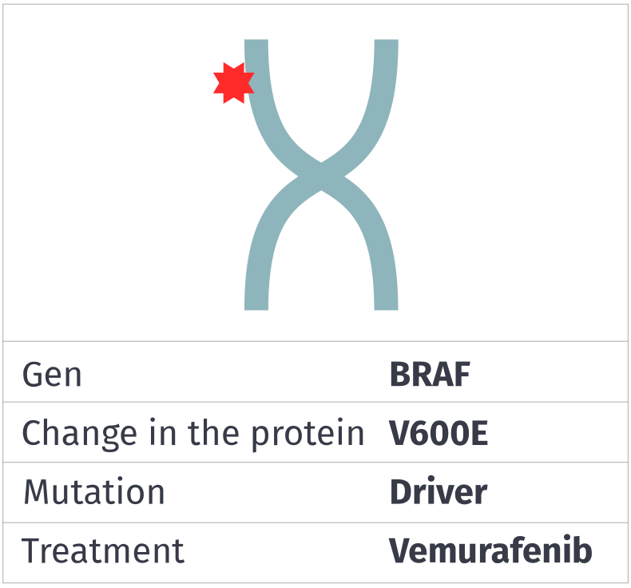

Analyze the samples
Next, we will simulate what happens when samples of two patients reach the hospital laboratory. Step into the shoes of the scientist who receives them.
How will we do it?
Analyze the samples to identify the driver mutations in each tumor and so be able to assign a treatment for each patient. Do so by following these steps:


01.
Examine the patients’ data, the type of cancer, and their exposure to risk factors

02.
Analyze the DNA of each tumor to identify mutations and which genes and proteins are affected


03.
Identify which mutations are cancer drivers and whether there is a specific treatment for each one
04.
Analyze the results and put your knowledge to the test!
